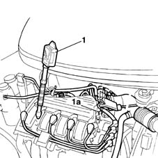
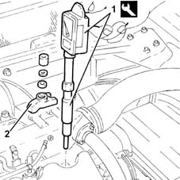

0510A10 cylinder compression - check for loose spark plugs or injectors
- Path
- Procedures > 05 DIAGNOSTICS > 0510 VARIOUS CONTROLS > 0510A checks on engine > 0510A10 cylinder compression - check for loose spark plugs or injectors
- Kind
- repair procedure (removal / refitting; the operation number is the code)
- Applies to
- all engines; all production periods
- Interactive page
- https://sloeber94.github.io/elrnDB-fMltpl/en/#/2891167
Applies to: engines: 1.6 16v; all production periods
Disconnect the electrical connection from the engine management control unit ( 1056A82 injection/ignition system e.c.u. (single) r + r ).
 | Name | Connector |
|---|---|---|
- | Engine management ECU |
1. Insert the test instrument into the seat of a spark plug.
Via the starter motor, make the engine execute a few revolutions while holding down the accelerator and clutch pedals.
Repeat the test on the remaining cylinders, making sure to reset the instrument each time.
Check that the cylinders' pressure readings do not differ excessively.

Applies to: engines: 1.6 16v; all production periods
Connect the electrical connection to the engine management control unit (refer to Op. 1056A82 injection/ignition system e.c.u. (single) r + r ).
| Name | Connector |
|---|---|---|
- | Engine management ECU |
Applies to: engines: 1.9 JTD 8V; all production periods
Disconnect the electrical connections from the engine management control unit ( 1060G80 ds electric injection control unit - r r ).
| Name | Connector |
|---|---|---|
- | Engine management ECU |
1. Fit the tool on the test instrument.
 | Name | Country |
|---|---|---|
1 | Dummy injector | 1.870.683.000 |
2. Insert the test instrument into the fuel injector seat and lock it with its brackets.
Via the starter motor, make the engine execute a few revolutions while holding down the accelerator and clutch pedals.
Repeat the test on the remaining cylinders, making sure to reset the instrument each time.
Check that the cylinders' pressure readings do not differ excessively.

Topics linked from this page (2)
Topics that link to this page (9)
- B11 ENGINE STARTS WITH DIFFICULTY' / WHEN WARM
- B12 ENGINE STARTS WITH DIFFICULTY' / WHEN COLD
- B16 ENGINE STARTS WITH DIFFICULTY'
- D01 ENGINE NOT RUNNING SMOOTHLY / (HESISTANT)
- D04 ENGINE NOT RUNNING SMOOTHLY
- D05 ENGINE DOES NOT PRODUCE BEST PERFORMANCE
- D10 ENGINE IDLE IRREGULAR
- W11 EXCESSIVE EXHAUST FUMES'
- X01 EXCESSIVE FUEL CONSUMPTION